LOGO
Cégep Gérald-Godin
Session Hiver 2025
Réaliser un projet de logiciel appliqué à la robotique
247-4B6-GG
Nom et prénom :
Enseignant : Antoine Legault
Consignes d’examen
- Documentation permise
- Ordinateur du cégep permis
- Le crayon à mine et les stylos sont permis
- ATTENTION! Si 2 codes se ressemblent trop, ce sera considéré comme du plagiat
Résultat : / 15
Python
Bases, structures de données, environnements et programmation objet.
Variables Globales
x = 10 # Globale
def ma_fonction():
x += 5 # ERREUR! x n'est pas accessible!
ma_fonction()Variables Locales
my_global = "myglobal"
def my_print():
my_local = "mylocal"
print(my_local)
print(my_local)
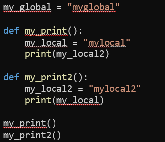
Variables Arguments
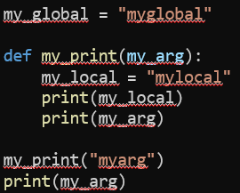
Variables Membres
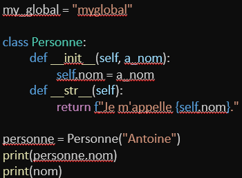
Thread & Callback
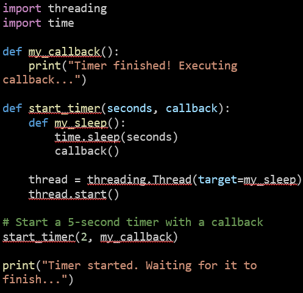
Array
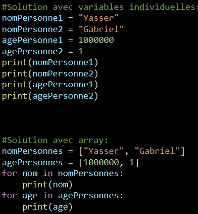
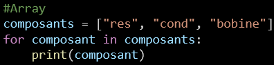
Array 2D
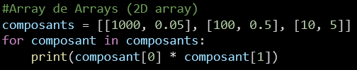
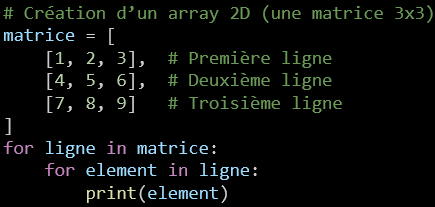
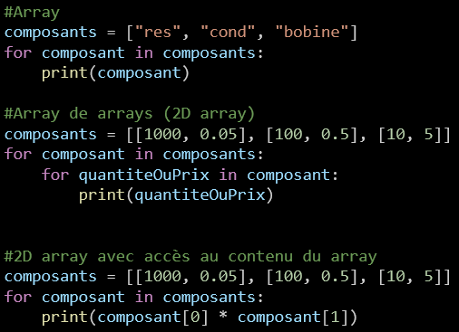
Dictionnaire
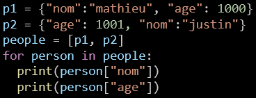
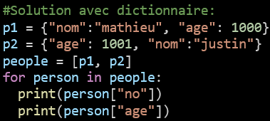
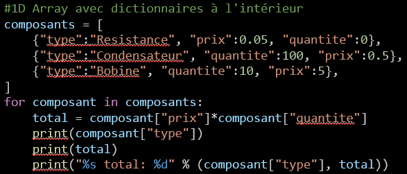
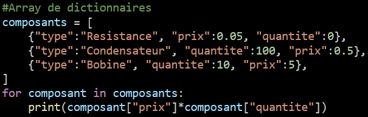
Tuple
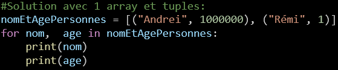
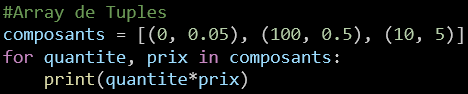
Objet
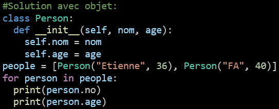
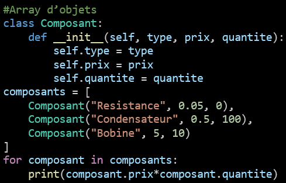
Obj vs Dico vs JSON
TBD2D vs Dico vs TupleArray
TBDDictionnaire -> Objet
TBDHéritage
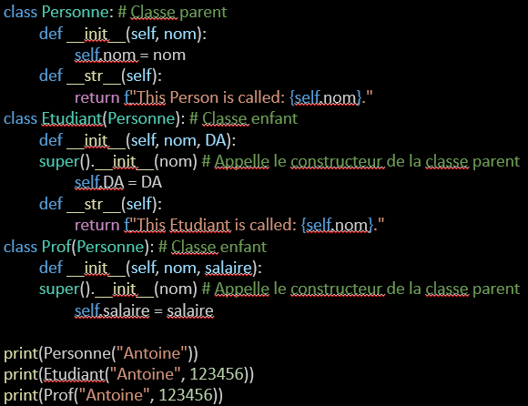
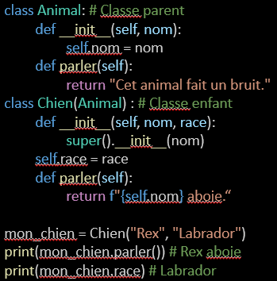
Raspberry Pi (RPi)
GPIO, SSH, services, déploiement léger.
RPi OS
Raspberry Pi OS est une variante de Linux, au même titre que Android et Chrome OSLinux
Linux, créé par Linus Torvald, est un système d’exploitation (SE) au même titre que Windows et MacGPIO
TBDGit
Branches, commits signés, workflows.
Workflow de base
git init
git switch -c main
git add .
git commit -m "Init"Conseils
- Commits atomiques, messages impératifs.
git stashavant de changer de branche.
SQL
Schémas, jointures, index.
Création & index
CREATE TABLE etudiants(id INT PRIMARY KEY, nom TEXT);
CREATE INDEX idx_nom ON etudiants(nom);Jointure
SELECT e.nom, c.cours
FROM etudiants e
JOIN cours c ON c.id_e=e.id;REST
Appels serveur
POST
pensez à write, soit envoyer une information, par exemple ON pour allumer une DELGET
Pensez à read, soit demander une information, par exemple le statut d’un boutonFlask
Flask est un framework web, il créé un serveur codé en Python sur votre OS Pour plus de détails: https://flask.palletsprojects.com/en/stable/quickstart/#a-minimal-applicationComment fonctionne un site web?
Lorsque le client (vous et Chrome) appelez un site (ex: google.ca), le site vous envoie un fichier *.html et Chrome ouvre le fichier automatiquementDNS
Une table de référence qui permet de traduire google.ca en l’adresse IP publique (whatismyip.com) de Google et rejoindre l’ordinateur chez Google qui contient le fichier *.htmlIP publique VS privée
Privée est sur un même réseau (LAN, par exemple, avec GG_TEP, 192.168.4.???) et publique est ouverte au monde (voir www.whatismyip.com)Écran tactile
Nextion
Bouton et textfield
https://youtu.be/SV_YmC-sxvUGIF
https://youtu.be/dquPoMtppP8JSON
Sérialisation, validation, schémas.
Pourquoi?
Format pour envoyer de l’information. Par exemple, si j’ai besoin d’envoyer en même temps (pour être efficace) ON pour la DEL1 et OFF pour la DEL2, je pourrais faire: Option1 ( pas de JSON)
String message = "DEL1=ON,DEL2=OFF “;
Le récepteur devrait donc faire qqch comme:
String del1Status = message[6] + message[7];
String del2Status = message[14] + message[15] + message[16];
if(del1Status == " ON "){
…
}
Option2 (avec JSON)
String message = “{“isDel1On”:”true”, “isDel2On”:”false”}”;
Le récepteur devrait donc faire qqch comme:
DelStates delStates = JsonParser.parse(message);
If(delStates.isDel1On){
…
}
On voit comment dans le 2e code on obtient directement le Boolean, sans avoir à comparer une String. Aussi, si jamais, dans l’option1, "DEL1=ON,DEL2=OFF “ devient "DEL2=ON,DEL1=OFF “, ou "DEL1=ON, DEL2=OFF “, le code ne fonctionne plus, alors que dands l’option2 rien ne changerait. Aussi, si DEL1 devient OFF, 14,15,16 doit devenir 15,16,17 et donc le code doit prendre cela en compte (pas fait ici). Finalement, en utilisant un standard, par exemple JSON, on évite d’avoir à écrire une documentation pour expliquer comment faire le code dans le récepteur (ie “6 et 7 pour del1 et 14, 15 et 16 pour del2)
Format
{"nom":"Antoine","cours":["Python","SQL"]}Python
import json
data = json.loads('{"x":1}')
txt = json.dumps(data, ensure_ascii=False, indent=2)Écran tactile
Gestes, cibles tactiles, UI réactive.
Taille des cibles
Recommandation : min 44×44 px, espacements généreux (Apple HIG & Material).
Gestes
- Défilement vertical naturel.
- Tap / long-press / swipe → feedback visuel.
— Fin des notes —